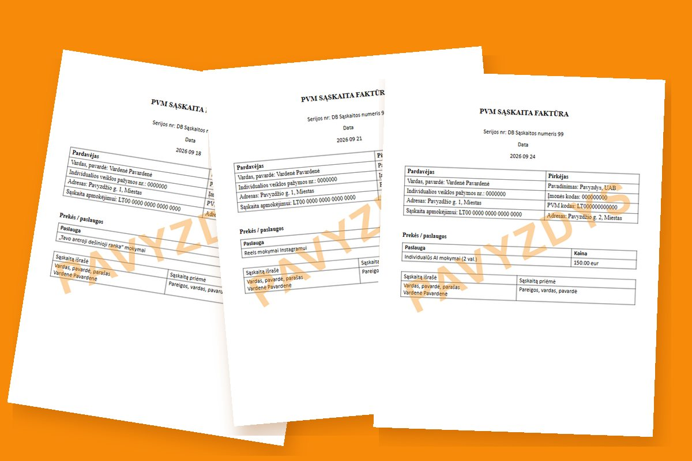
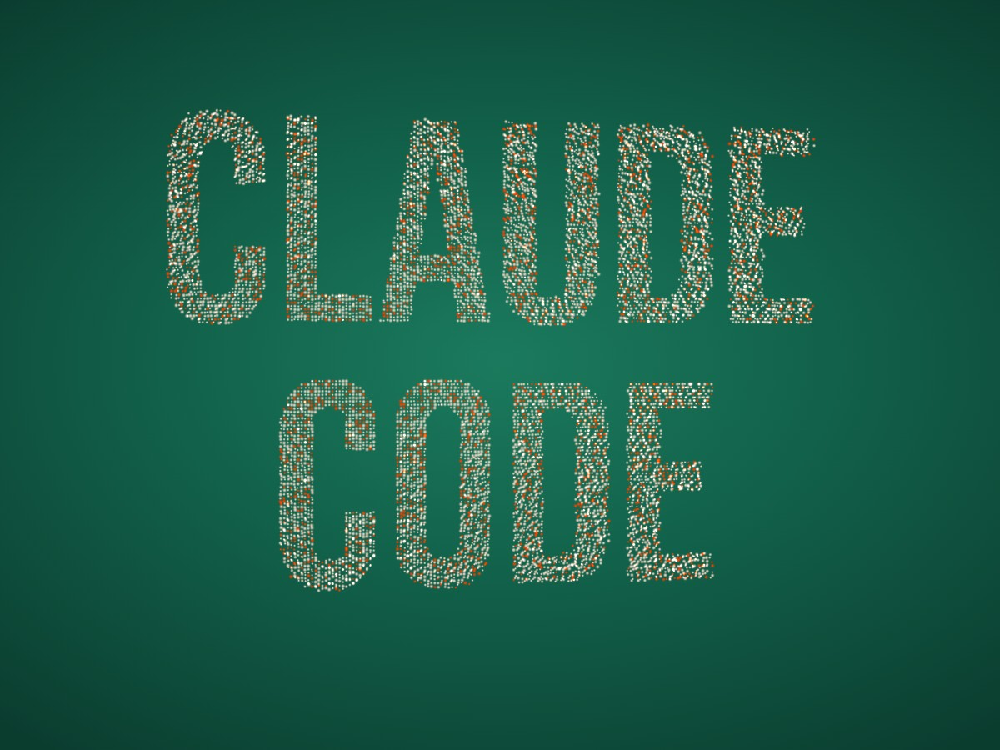
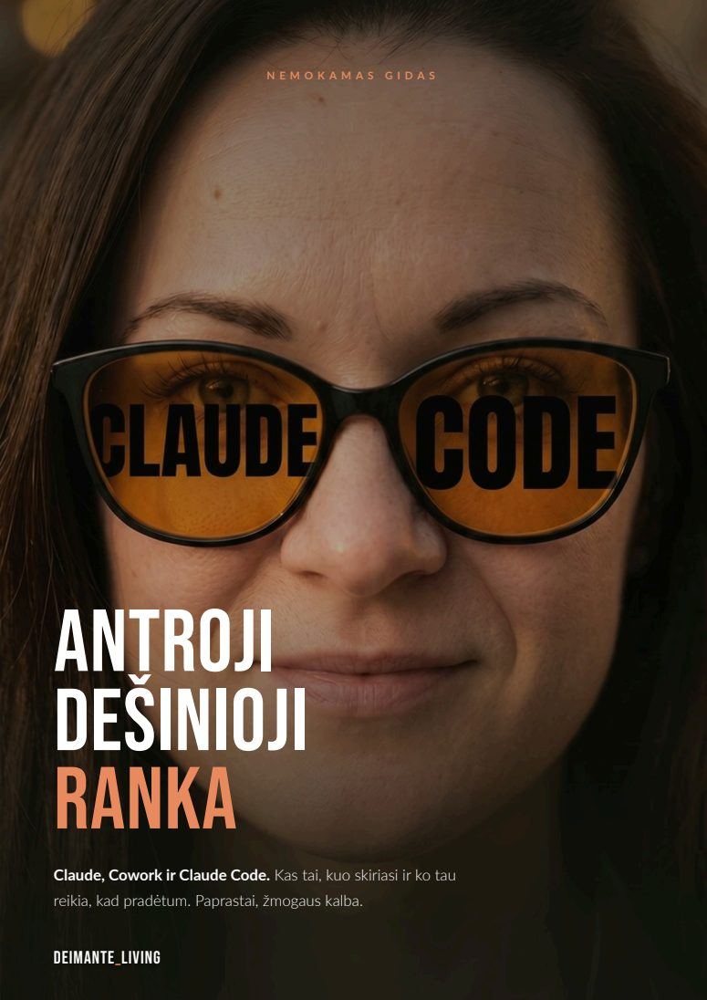
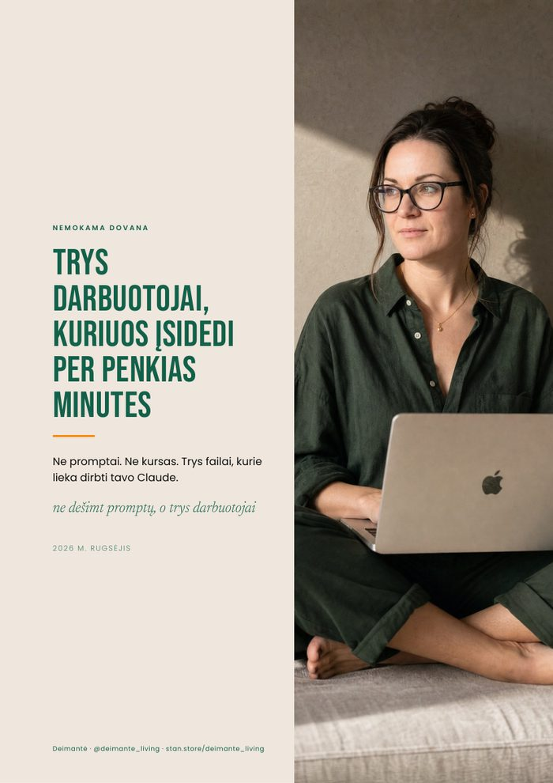
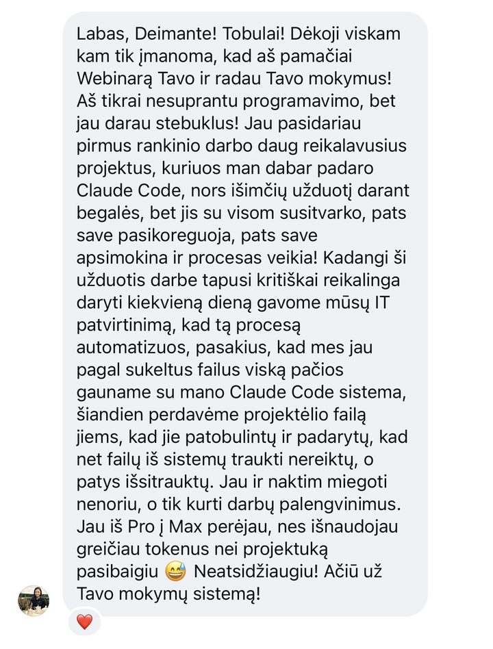
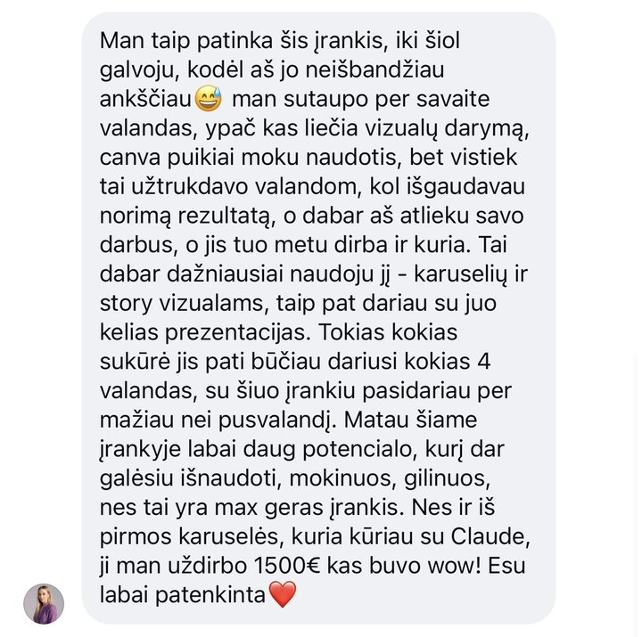
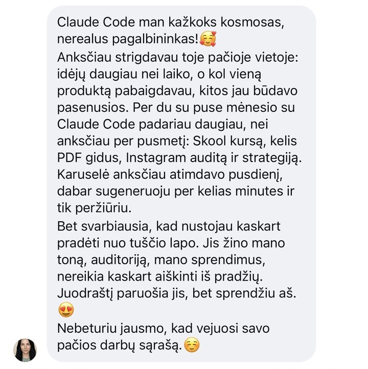
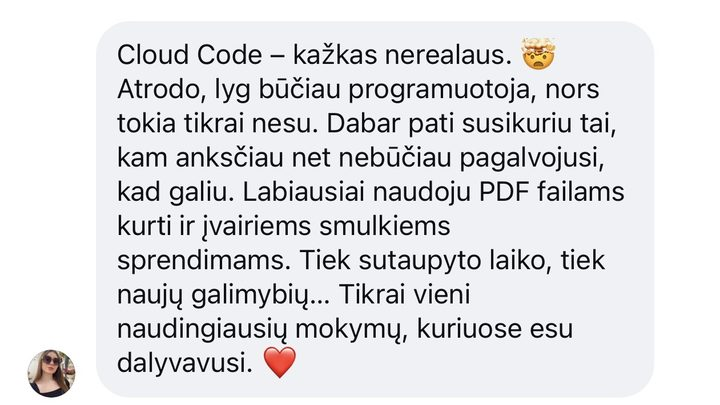
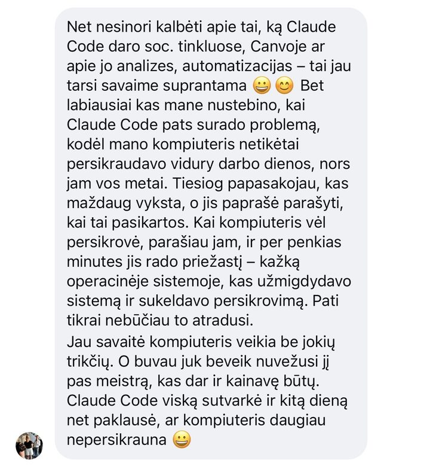
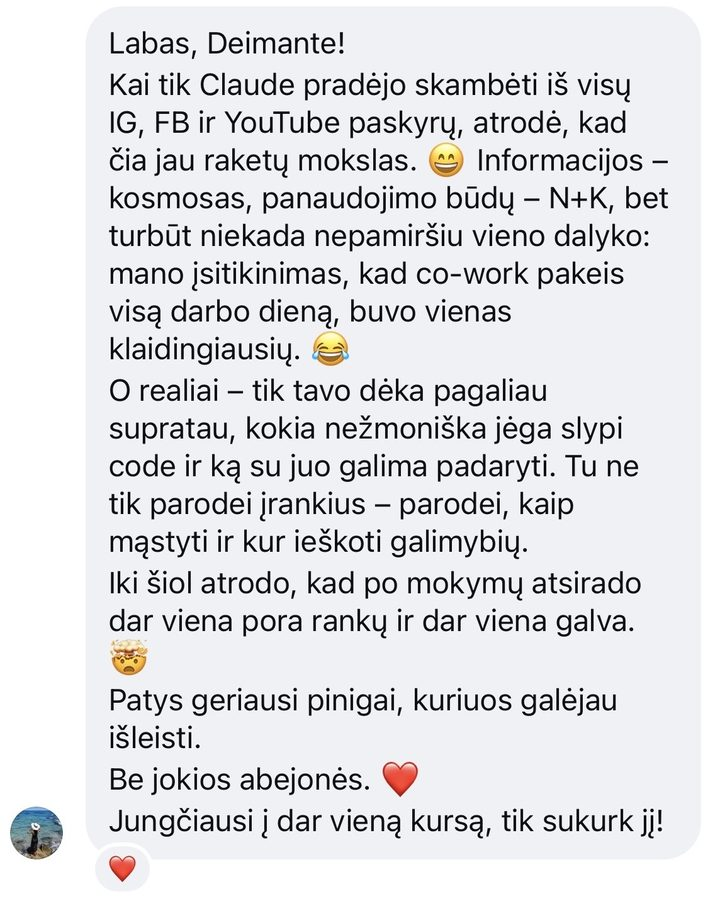

Reels montažas
Įmetu nufilmuotą video, o Claude Code sumontuoja: priartinimai, perėjimai, subtitrai.
Sąskaitos, karuselės, automatinės žinutės ir net ši svetainė. Viską padariau su Claude Code, be programavimo žinių 🫶
Noriu išmokti ir ašAš ne programuotoja ir jokio kodo nemoku.
Esu Deimantė. Turinio kūrėja, mokytoja ir vienintelė savo verslo darbuotoja 😀
Anksčiau: tekstai, dizainas, sąskaitos ir marketingas ant mano galvos, o laiko tik nuo 9 iki 15.
Dabar: aš pasakau, ko noriu, Claude Code padaro, aš peržiūriu. Būtent to ir mokau kitus, gyvai per Zoom ir Skool platformoje.
Ne pažadai. Tikri darbai iš mano kasdienybės.
Įmetu nufilmuotą video, o Claude Code sumontuoja: priartinimai, perėjimai, subtitrai.
Aprašau idėją, o skaidres su mano šriftais ir spalvomis sudeda Claude Code.
Parašai komentare GIDAS ir iškart gauni žinutę su nuoroda. Automatiką pastatė Claude Code.

Programėlė iš Stan pardavimų failo išrašo sąskaitas PDF formatu ir veda jų žurnalą.

Tūkstančiai taškų susideda į žodžius ir vėl išsisklaido. Užvesk pelę arba paliesk pirštu.


21 puslapio gidas ir 9 puslapių dovana, sumaketuoti su mano nuotraukomis ir veikiančiais mygtukais.
Ir ši svetainė.
Ją irgi padarė Claude Code. Man tereikėjo pasakyti, ko noriu 🤭
„Aš tikrai nesuprantu programavimo, bet jau darau stebuklus!“

„Iš pirmos karuselės, kurią kūriau su Claude, ji man uždirbo 1500 €“

„Per du su puse mėnesio padariau daugiau nei anksčiau per pusmetį“

„Atrodo, lyg būčiau programuotoja, nors tokia tikrai nesu“

„Per penkias minutes jis rado priežastį… Pati tikrai nebūčiau to atradusi“

„Patys geriausi pinigai, kuriuos galėjau išleisti.“
Po mokymų atsirado dar viena pora rankų ir dar viena galva.

Po mokymų įvaldysi vieną iš galingiausių AI įrankių, kokie šiandien yra. Ne teoriškai, o savo kompiuteryje, savo darbams.
Šiandien reikia mokėti vieną: kaip su juo kalbėtis.
Dar neapsisprendei? Pradėk nuo nemokamo gido apie Claude, Cowork ir Claude Code.
Parsisiųsk nemokamą gidą